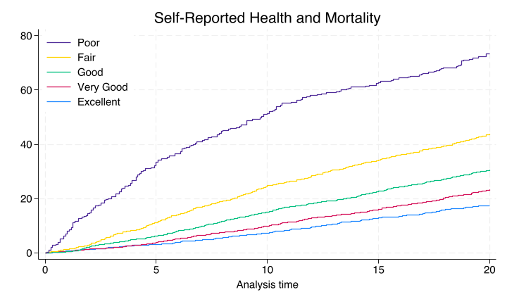

8. Finesse project website, reduce clutter, ensure reproducibility#
8.1 Finesse project website#
A project website might be a reflection of your professionalism and attention to detail. Ensure that your website is easy to navigate, with clear menus and a cohesive design.
8.2 Reduce clutter#
Clarity is key in clinical and public health research communications. Use hyperlinks to provide detailed information on a separate webpage, keeping your main page clean and focused. This allows readers to explore topics in more depth if they wish.
8.3 Ensure reprodicibility#
Reproducibility is the cornerstone of scientific research. Document your code and data sources meticulously, and provide clear instructions for running analyses. This allows others to replicate your findings.
Show code cell source
//cls
qui {
if 1 {
//1. data
global repo "https://github.com/jhustata/project/raw/main/"
global nhanes "https://wwwn.cdc.gov/Nchs/Nhanes/"
//2. code
do ${repo}followup.do
save followup, replace
import sasxport5 "${nhanes}1999-2000/DEMO.XPT", clear
merge 1:1 seqn using followup, nogen
save survey_followup, replace
//3. parameters
import sasxport5 "${nhanes}1999-2000/HUQ.XPT", clear
tab huq010
merge 1:1 seqn using survey_followup, nogen keep(matched)
rm followup.dta
rm survey_followup.dta
g years=permth_int/12
stset years, fail(mortstat)
replace huq010=. if huq010==9
label define huq 1 "Excellent" 2 "Very Good" 3 "Good" 4 "Fair" 5 "Poor"
label values huq010 huq
levelsof huq010, local(numlevels)
local i=1
foreach l of numlist `numlevels' {
local vallab: value label huq010
local catlab: lab `vallab' `l'
global legend`i' = "`catlab'"
local i= `i' + 1
}
save week7, replace
#delimit;
sts graph,
by(huq010)
fail
per(100)
ylab(0(20)80 ,
format(%2.0f)
)
xlab(0(5)20)
tmax(20)
ti("Self-Reported Health and Mortality")
legend(
order(5 4 3 2 1)
lab(1 "$legend1")
lab(2 "$legend2")
lab(3 "$legend3")
lab(4 "$legend4")
lab(5 "$legend5")
ring(0) pos(11)
) ;
#delimit cr
graph export ~/documents/github/nonpara.png, replace
save ~/documents/github/wk8, replace
}
}
use ~/documents/github/wk8, clear
stcox i.huq010, basesurv(s0)
sort _t s0
list _t s0 in 1/20
keep _t s0
save ~/documents/github/s0, replace
. use ~/documents/github/wk8, clear
. stcox i.huq010, basesurv(s0)
Failure _d: mortstat
Analysis time _t: years
Iteration 0: Log likelihood = -14053.711
Iteration 1: Log likelihood = -13842.257
Iteration 2: Log likelihood = -13815.469
Iteration 3: Log likelihood = -13815.219
Iteration 4: Log likelihood = -13815.219
Refining estimates:
Iteration 0: Log likelihood = -13815.219
Cox regression with Breslow method for ties
No. of subjects = 5,436 Number of obs = 5,436
No. of failures = 1,671
Time at risk = 91,679.7499
LR chi2(4) = 476.98
Log likelihood = -13815.219 Prob > chi2 = 0.0000
------------------------------------------------------------------------------
_t | Haz. ratio Std. err. z P>|z| [95% conf. interval]
-------------+----------------------------------------------------------------
huq010 |
Very Good | 1.347475 .1251746 3.21 0.001 1.123176 1.616567
Good | 1.880346 .1619641 7.33 0.000 1.588251 2.226159
Fair | 2.985347 .2634849 12.39 0.000 2.511125 3.549126
Poor | 7.475088 .7565146 19.88 0.000 6.130144 9.115111
------------------------------------------------------------------------------
. sort _t s0
. list _t s0 in 1/20
+-----------------------+
| _t s0 |
|-----------------------|
1. | .08333334 .9996459 |
2. | .08333334 .9996459 |
3. | .08333334 .9996459 |
4. | .08333334 .9996459 |
5. | .16666667 .99938005 |
|-----------------------|
6. | .16666667 .99938005 |
7. | .16666667 .99938005 |
8. | .25 .99858103 |
9. | .25 .99858103 |
10. | .25 .99858103 |
|-----------------------|
11. | .25 .99858103 |
12. | .25 .99858103 |
13. | .25 .99858103 |
14. | .25 .99858103 |
15. | .25 .99858103 |
|-----------------------|
16. | .25 .99858103 |
17. | .33333334 .99804732 |
18. | .33333334 .99804732 |
19. | .33333334 .99804732 |
20. | .33333334 .99804732 |
+-----------------------+
. keep _t s0
. save ~/documents/github/s0, replace
file ~/documents/github/s0.dta saved
Nonparametric#
This line of code graph export ~/documents/github/nonpara.png, replace above yields a nonparametric product-limit-estimator, also known as the “Kaplan-Meier” curve

Semiparametric#
The above results from a Cox regression are semi-parametric. The \(\beta_i\) coefficients are the parametric moiety where as the \(s0\) kaplan-meier estimate for the basecase is the nonparametic; hence, semiparametric!
qui {
matrix b = e(b)
matrix list b
//SV -> scenario vector (i.e., user-input = scenario)
//In the scenario below b0=1, b1=0, b2=0, b3=0, b4=0m b5=0
matrix define SV = (1, 0, 0, 0, 0)
//yields the logHR
matrix loghr = SV*b'
use "${repo}s0.dta", clear
g f0 = (1 - s0)*100
g f1 = f0*exp(loghr[1,1])
noi sum f1 if inrange(_t,0,.0001)
noi sum f1 if inrange(_t,4.9999,5.0001)
noi sum f1 if inrange(_t,9.9999,10.0001)
noi sum f1 if inrange(_t,14.9999,15.0001)
noi sum f1 if inrange(_t,19.9999,20.0001)
//Segev, JAMA, 2010
noi di "Donor mortality at 12-year follow-up:" %3.1f r(max) "%"
#delimit;
line f1 _t if inrange(_t,1,15),
sort
connect(step step)
ylab(0(10)40,
format(%2.0f)
)
xlab(0(3)15)
yti("%")
xti("Years")
;
#delimit cr
}
file https://github.com/jhustata/project/raw/main/s0.dta not found
r(601);
r(601);